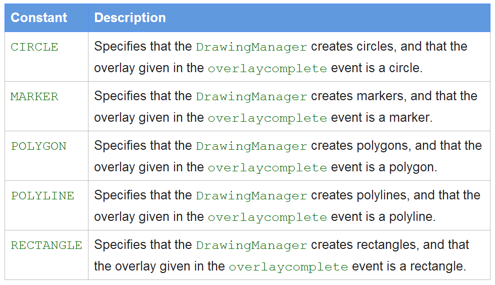

Hello Drawing 範例
在地圖中加上一個可以繪製多邊形的工具列
var polyOption = {
strokeWeight: 1,
fillColor: '#1E90FF',
strokeColor: '#1E90FF',
fillOpacity: 0.45,
editable: true
};
var drawingManager = new google.maps.drawing.DrawingManager({
drawingMode: null, //google.maps.drawing.OverlayType.POLYGON,
drawingControl: true,
drawingControlOptions: {
position: google.maps.ControlPosition.TOP_CENTER,
drawingModes: [
//google.maps.drawing.OverlayType.RECTANGLE,
google.maps.drawing.OverlayType.POLYGON
]
},
polygonOptions: polyOption,
rectangleOptions: polyOption,
map: gmap
});
加上 drawing 這個 library 的引用
<script type="text/javascript"
src="http://maps.googleapis.com/maps/api/js?key=&sensor=false&libraries=drawing">
</script>
google.maps.drawing.OverlayType class
